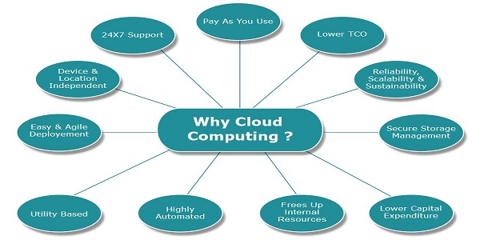
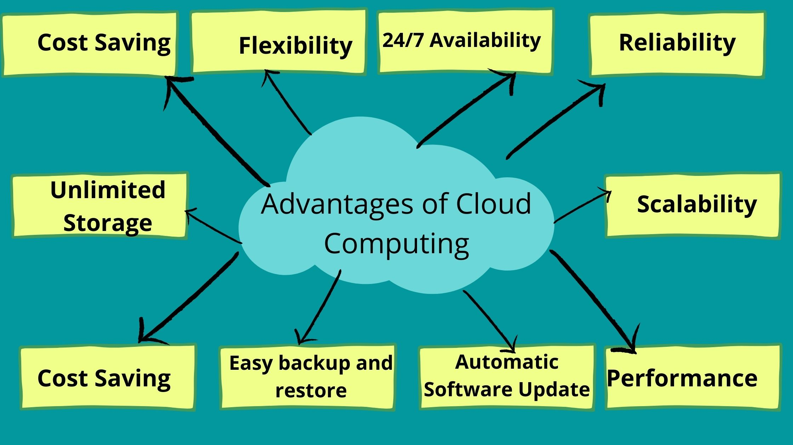

What is cloud computing
Cloud computing is the delivery of computing resources, such as IT infrastructure or data center over the internet. This model allows businesses to rent storage space or access software programs from a cloud service provider, instead of building and maintaining their own IT infrastructure or data center. To better understand its technical aspects, cloud computing processes can be divided into frontend and backend. The frontend component allows users to access data and programs stored in the cloud through an internet browser or by using a cloud computing application. The backend consists of servers, computers and databases that store the data.
Read More

Why is the cloud computing important
The introduction of cloud computing and virtualization was a paradigm shift in the history of the technology industry. Rather than creating and managing their own IT infrastructure and paying for servers, power and real estate, etc., cloud computing allows businesses to rent computing resources from cloud service providers. This helps businesses avoid paying heavy upfront costs and the complexity of managing their own data centers. By renting cloud services, companies pay only for what they use such as computing resources and disk space. This allows companies to anticipate costs with greater accuracy.
Read More
Benefits of cloud computing
One of the benefits is cost saving.It helps companies to reduce capital and expenses significantly. Cloud computing offers greater flexibility to businesses of all sizes. Whether they require extra bandwidth, computing power or storage space.Cloud vendors provide advanced security features like authentication, access management, data encryption, etc., to ensure sensitive data in the cloud is securely handled and stored. Cloud applications allow businesses to seamlessly communicate and securely access and share information, making collaboration simple and hassle-free. Cloud computing empowers multiple users to edit documents or work on files simultaneously and in a transparent manner.
Read More
